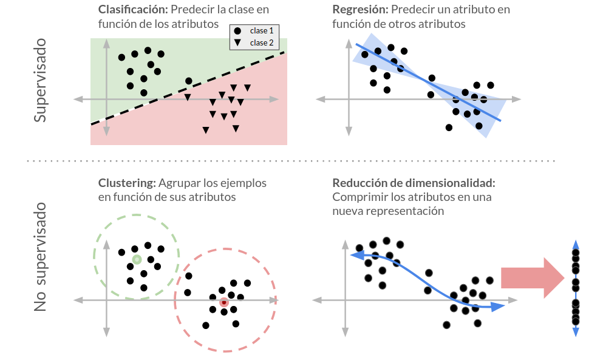

30. Machine Learning: Conceptos clave#
30.1. ¿Qué es Machine Learning?#
Podemos definir Machine Learning o Aprendizaje de Máquinas como:
El estudio de sistemas que aprenden reglas o patrones en base a ejemplos para resolver una tarea
En este contexto con “ejemplos” nos referimos a:
Datos asociados a la tarea que se quiere resolver
Mientras que sistema (o máquina) correspondería a:
Algoritmo o modelo matemático que mejora su desempeño entrenándose con los ejemplos
El esquema conceptual general de ML se muestra en la siguiente figura

donde:
Conceptualización: Se refiere a identificar el problema
Datos: Se refiere a la recolección, importación, pre-precesamiento y etiquetado de datos
Modelamiento: Se referiere a la selección, entrenamiento y validación del o los modelos
Inferencia: Se refiere a utilizar el modelo para tomar decisiones sobre ejemplos nuevos
En este último punto yace el objetivo principal de Machine Learning (ML).
Importante
Entrenamos modelos para clasificar/predecir/agrupar ejemplos que el modelo no ha visto aun. Un modelo que realiza inferencias correctas en ejemplos nuevos es un modelo que ha logrado generalizar lo aprendido.
Para que el modelo sea capaz de aprender y generalizar ML combina técnicas de estadísticas y optimización computacional.
30.2. Taxonomía de algoritmos de Machine Learning#
Podemos hacer una clasificación gruesa de los algoritmos y modelos de ML en base a las tareas que buscan resolver.
La siguiente figura esquematiza las cuatro tareas más típicas que se resuelven usando ML
{kind=link}
En la figura podemos distinguir cuatro tipos de tareas agrupadas bajo dos paradigmas: Aprendizaje supervisado y Aprendizaje no supervisado.
Los modelos de aprendizaje no supervisado buscan revelar estructura en los datos sin utilizar etiquetas. Por ejemplo estos métodos pueden usarse para encontrar grupos de similitud, jerarquías entre las variables o nuevas representaciones y visualizaciones de los datos.
Los modelos de aprendizaje supervisado buscan aprender una función que prediga un objetivo (categórico, discreto o continuo) en base a los datos. En la jerga de ML este objetivo usualmente se denomina etiqueta y debe entregarse al modelo durante su entrenamiento.
30.3. Librería scikit-learn#
En este capítulo se utilizan métodos de machine learning implementados en la librería de Python scikit-learn. En particular se revisarán:
Modelos para hacer proyección y reducción de dimensionalidad:
sklearn.decompositionModelos para hacer agrupamiento:
sklearn.clusterModelos para clasificación:
sklearn.naiveFunciones para evaluar el desempeño de clasificadores:
sklearn.metricsFunciones para hacer selección de modelos:
sklearn.model_selection
Ver también
Para un tratamiento más profundo sobre métodos de aprendizaje supervisado sugiero revisar el siguiente material.